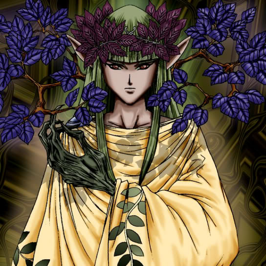

Green Phantom King

Description: "When this card is flipped face-up, all Queen of Autumn Leaves cards are strengthened by 500 points."
STATS
ATK: 500
DEF: 1600
DECK COST
Deck Cost per Card: 26
EFFECT NOT IMPLEMENTED